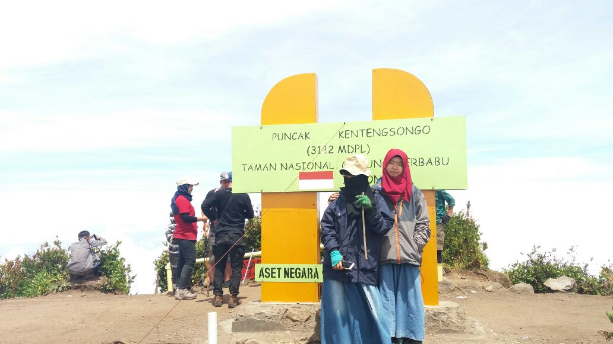

This is my Story

MT.Andong
Ini mupakan pengalaman pertama ku menaiki gunung. Ku awali dengan gunung yang tracknya tak terlalu berat. dan juga dengan ketinggian 1700mdpl.untuk pengalaman yang pertama ini, cuaca nya sedaang tidak mendukung. ketika kami mulai berjalan, begitu juga gerimis mulai datang. kali ini kita berangkat naik mulai ba'da sholat isya. sekitar dua jam perjalanan, akhirnya kami sampai di puncak. sesampainya di puncak, sudah banyak sekaali tenda yang sudah berdiri. kamipun hampir tak kebagian tempat untuk mendirikan tenda. ya, andong ini area camp nya tak terlalu luas. jadi harus sabar mencari tempat yang aman untuk mendirikan tenda. mengingat kanan kiri yang curam. selesai mendirikan tenda kamipun bergegas membuat api dan memasak air untuk menghangatkan tubuh yang kedinginan. kami pun turun di keesokaan harinya. pengalaman yang lumayan sedikit membuat ku kapok naik gunung lagi. hehe

MT.Merbabu
Merbabu, gunung kedua yang ku daki. kali ini kami beranggotakan lima orang. dikesempatan pertama track hujan, dan cuaca tak mendukung. namun di kesempatan kali ini, cuaca sangat cerah dan mendukung perjalanan kami. gunung yang tingginya sekitar 3000mdpl ini, konon mempunyai sabana yang indah. itu salah satu alasan ku untuk ikut mendaki kedua kalinya. seperti biasa, kami akan berangkat biasanya ba'da sholat isya. prepare perlengkapan, cek recek lagi barang-barang. setelah kita pun cus dari base camp menuju puncak merbabu. sesampai di sabana 2 kami mendirikan tenda, karena sudah lelah sekali. keesokan harinya kami melanjutkan untuk naik ke puncak nya. masya Allah, indah sekali pemandangan kali ini. cape lelah letih terbayar sudah.